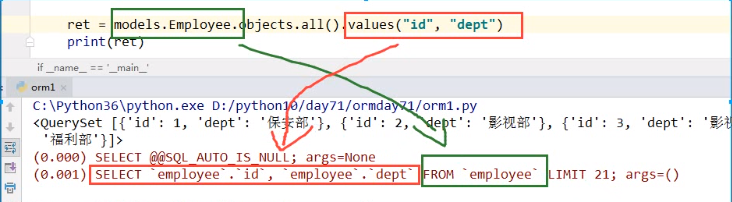
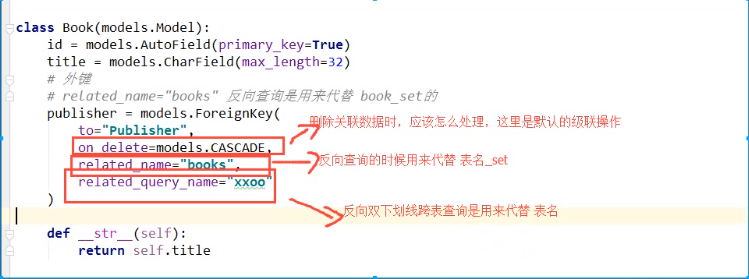
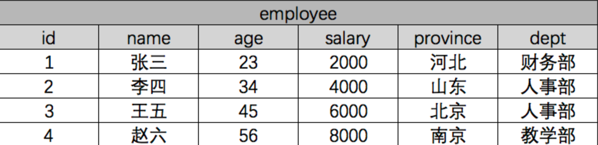
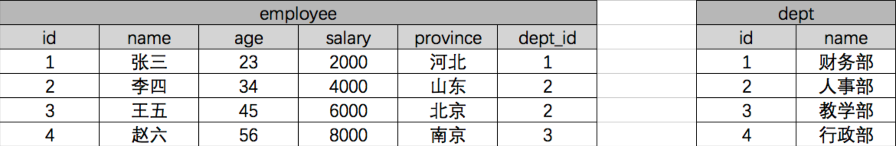

datetime:2019/6/12 16:47
author:nzb
Django ORM相关操作
一般操作
必知必会13条
<1> all(): 查询所有结果
<2> filter(**kwargs): 它包含了与所给筛选条件相匹配的对象
<3> get(**kwargs): 返回与所给筛选条件相匹配的对象，返回结果有且只有一个，如果符合筛选条件的对象超过一个或者没有都会抛出错误。
<4> exclude(**kwargs): 它包含了与所给筛选条件不匹配的对象
<5> values(*field): 返回一个ValueQuerySet——一个特殊的QuerySet，运行后得到的并不是一系列model的实例化对象，而是一个可迭代的字典序列，需要哪些字段就写进去。
<6> values_list(*field): 它与values()非常相似，它返回的是一个元组序列，values返回的是一个字典序列
<7> order_by(*field): 对查询结果排序
<8> reverse(): 对查询结果反向排序，请注意reverse()通常只能在具有已定义顺序的QuerySet上调用(在model类的Meta中指定ordering或调用order_by()方法)。
<9> distinct(): 从返回结果中剔除重复纪录(如果你查询跨越多个表，可能在计算QuerySet时得到重复的结果。此时可以使用distinct()，注意只有在PostgreSQL中支持按字段去重。)
<10> count(): 返回数据库中匹配查询(QuerySet)的对象数量。
<11> first(): 返回第一条记录
<12> last(): 返回最后一条记录
<13> exists(): 如果QuerySet包含数据，就返回True，否则返回False
values()方法例子：

返回QuerySet对象的方法有
all()
filter()
exclude()
order_by()
reverse()
distinct()
特殊QuerySet
values() 返回一个可迭代的字典序列
values_list() 返回一个可迭代的元祖序列
返回具体对象的
get()
first()
last()
返回布尔值的方法有
exists()
返回数字的方法有
count()
单表查询之神奇的双下划线
models.Tb1.objects.filter(id__lt=10, id__gt=1) # 获取id大于1 且 小于10的值
models.Tb1.objects.filter(id__in=[11, 22, 33]) # 获取id等于11、22、33的数据
models.Tb1.objects.exclude(id__in=[11, 22, 33]) # not in
models.Tb1.objects.filter(name__contains="ven") # 获取name字段包含"ven"的
models.Tb1.objects.filter(name__icontains="ven") # icontains大小写不敏感
models.Tb1.objects.filter(id__range=[1, 3]) # id范围是1到3的，等价于SQL的bettwen and
类似的还有：startswith，istartswith, endswith, iendswith
date字段还可以：
models.Class.objects.filter(first_day__year=2017)
ForeignKey操作

正向查找
对象查找(跨表)
这是对对象进行操作，不能values()和values_list()
语法：
对象.关联字段.字段
示例：
book_obj = models.Book.objects.first() # 第一本书对象
print(book_obj.publisher) # 得到这本书关联的出版社对象
print(book_obj.publisher.name) # 得到出版社对象的名称
字段查找(跨表)
这是对QuerySet进行操作，可以 values()和values_list()
语法：
关联字段__字段
示例：
print(models.Book.objects.values_list("publisher__name")) # 双下划线表示跨表
反向操作
对象查找
语法：
obj.表名_set
示例：
publisher_obj = models.Publisher.objects.first() # 找到第一个出版社对象
books = publisher_obj.book_set.all() # 找到第一个出版社出版的所有书
titles = books.values_list("title") # 找到第一个出版社出版的所有书的书名
如果外键字段设置了：related_name：用于获取关联对象的关联管理器对象（反向查询），如果不允许反向，该属性应该被设置为'+'，或者以'+'结尾。
例子：
course = models.ForeignKey(Course, verbose_name=u'课程', on_delete=models.CASCADE, related_name='course')
语法：
未设置：
**obj.表名_set**
设置：
**obj.course**
字段查找
语法：
表名__字段
示例：
titles = models.Publisher.objects.values_list("book__title")
OneToOneField
当一张表的某些字段查询的比较繁琐，另外一些字段查询的不是特别繁琐，把不怎么常用的字段单独拿出来做成一张表，然后用一对一关联起来。
优势：
- 既保证数据能完整的保存下来，有能保证大部分的检索更快。
用法：
OneToOneField(to="")
例子：
作者
class Author(models.Model):
name = models.CharField(max_length=12)
age = models.IntegerField()
phone = models.IntegerField()
detail = models.OneToOneField(to="AuthorDetail")
def __str__(self):
return self.name
作者详情
class AuthorDetail(models.Model):
爱好
hobby = models.CharField(max_length=32)
地址
addr = models.CharField(max_length=128)
ManyToManyField
class RelatedManager
"关联管理器"是在一对多或者多对多的关联上下文中使用的管理器。
它存在于下面两种情况：
- 外键关系的反向查询
- 多对多关联关系
简单来说就是当 点后面的对象 可能存在多个的时候就可以使用以下的方法。
方法
create()
创建一个新的对象，保存对象，并将它添加到关联对象集之中，返回新创建的对象。
>>> import datetime
>>> models.Author.objects.first().book_set.create(title="番茄物语", publish_date=datetime.date.today())
add()
把指定的model对象添加到关联对象集中。
添加对象
>>> author_objs = models.Author.objects.filter(id__lt=3)
>>> models.Book.objects.first().authors.add(*author_objs)
添加id
>>> models.Book.objects.first().authors.add(*[1, 2])
set()
更新model对象的关联对象。
>>> book_obj = models.Book.objects.first()
>>> book_obj.authors.set([2, 3])
remove()
从关联对象集中移除执行的model对象
>>> book_obj = models.Book.objects.first()
>>> book_obj.authors.remove(3)
clear()
从关联对象集中移除一切对象。
>>> book_obj = models.Book.objects.first()
>>> book_obj.authors.clear()
注意：
对于ForeignKey对象，clear()和remove()方法仅在null=True时存在。
举个例子：
ForeignKey字段没设置null=True时，
class Book(models.Model):
title = models.CharField(max_length=32)
publisher = models.ForeignKey(to=Publisher)
没有clear()和remove()方法：
>>> models.Publisher.objects.first().book_set.clear()
Traceback (most recent call last):
File "<input>", line 1, in <module>
AttributeError: 'RelatedManager' object has no attribute 'clear'
当ForeignKey字段设置null=True时，
class Book(models.Model):
name = models.CharField(max_length=32)
publisher = models.ForeignKey(to=Class, null=True)
此时就有clear()和remove()方法：
>>> models.Publisher.objects.first().book_set.clear()
注意：
- 对于所有类型的关联字段，add()、create()、remove()和clear(),set()都会马上更新数据库。换句话说，在关联的任何一端，都不需要再调用save()方法。
自己创建第三张表
多对多的方式
ORM自动创建第三种表
自己创建第三张表，利用外键分别关联作者和书
关联查询比较麻烦，因为没办法使用ORM提供的便利方法
自己创建第三张表，使用ORM 的ManyToManyField()
使用此种方式创建多对多表的时候，没有add()、remove()等方法 而是直接操作第三张表
使用方法(依情况而定)：
- 如果你第三张表没有额外的字段，就用第一种
- 如果你第三张表有额外的字段，就用第三种或第一种
# 作者
class Author(models.Model):
name = models.CharField(max_length=12)
age = models.IntegerField()
phone = models.IntegerField()
# 通过through="AuthorBook",through_fields=("author", "book") 来指定使用我创建的第三张表来构建多对多的关系，而不是django自动创建的
book = models.ManyToManyField(to="Book", through="AuthorBook", through_fields=("author", "book"))
# through_field中，第一个字段，多对多设置在哪一张表里，第三张表通过什么字段找到这张表，就把这个字段写在前面，有关联关系的才要写进去
detail = models.OneToOneField(to="AuthorDetail")
def __str__(self):
return self.name
# 书
class Book(models.Model):
name = models.CharField(max_length=50)
# 自己创建作者和书关联的第三张表
# 此时，在ORM层面 作者和书就没有多对多的关系了
class AuthorBook(models.Model):
# 作者id
author = models.ForeignKey(to="Author")
# 书id
book = models.ForeignKey(to="Book")
# 其他字段
info = models.CharField(max_length=12)
class Meta:
# 作者id和书id联合唯一
unique_together = ('author', 'book')
聚合查询和分组查询
聚合
aggregate()是QuerySet 的一个终止子句，意思是说，它返回一个包含一些键值对的字典。
键的名称是聚合值的标识符，值是计算出来的聚合值。键的名称是按照字段和聚合函数的名称自动生成出来的。
用到的内置函数：
from django.db.models import Avg, Sum, Max, Min, Count
示例：
>>> from django.db.models import Avg, Sum, Max, Min, Count
>>> models.Book.objects.all().aggregate(Avg("price"))
{'price__avg': 13.233333}
如果你想要为聚合值指定一个名称，可以向聚合子句提供它。
>>> models.Book.objects.aggregate(average_price=Avg('price'))
{'average_price': 13.233333}
如果你希望生成不止一个聚合，你可以向aggregate()子句中添加另一个参数。所以，如果你也想知道所有图书价格的最大值和最小值，可以这样查询：
>>> models.Book.objects.all().aggregate(Avg("price"), Max("price"), Min("price"))
{'price__avg': 13.233333, 'price__max': Decimal('19.90'), 'price__min': Decimal('9.90')}
分组
我们在这里先复习一下SQL语句的分组。
假设现在有一张公司职员表： 
我们使用原生SQL语句，按照部分分组求平均工资：
select dept,AVG(salary) from employee group by dept;
ORM查询:
from django.db.models import Avg
Employee.objects.values("dept").annotate(avg=Avg("salary").values("dept", "avg")
# values()就是取哪些字段，同时具有分组的作用。
连表查询的分组： 
SQL查询：
select dept.name,AVG(salary) from employee inner join dept on (employee.dept_id=dept.id) group by dept_id;
ORM查询：
from django.db.models import Avg
models.Employee.objects.values('dept_id').annotate(avg=Avg('salary')).values('dept__name', 'avg')
# 或
models.Dept.objects.annotate(avg=Avg("employee__salary")).values("name", "avg")
extra()方法分组
extra(select=None, where=None, params=None,
tables=None, order_by=None, select_params=None)
有些情况下，Django的查询语法难以简单的表达复杂的 WHERE 子句，对于这种情况, Django 提供了 extra() QuerySet修改机制 — 它能在 QuerySet生成的SQL从句中注入新子句
extra可以指定一个或多个 参数,例如 select, where or tables. 这些参数都不是必须的，但是你至少要使用一个!要注意这些额外的方式对不同的数据库引擎可能存在移植性问题.(因为你在显式的书写SQL语句),除非万不得已,尽量避免这样做
参数之select
The select 参数可以让你在 SELECT 从句中添加其他字段信息，它应该是一个字典，存放着属性名到 SQL 从句的映射。
queryResult=models.Article .objects.extra(select={'is_recent': "create_time > '2017-09-05'"})结果集中每个 Entry 对象都有一个额外的属性is_recent, 它是一个布尔值，表示 Article对象的create_time 是否晚于2017-09-05.
article_obj=models.Article.objects.filter(nid=1).extra(select={"standard_time":"strftime('%%Y-%%m-%%d',create_time)"}).values("standard_time","nid","title") print(article_obj) # <QuerySet [{'title': 'MongoDb 入门教程', 'standard_time': '2017-09-03', 'nid': 1}]>参数之where / tables
您可以使用where定义显式SQL WHERE子句 - 也许执行非显式连接。您可以使用tables手动将表添加到SQL FROM子句。
where和tables都接受字符串列表。所有where参数均为“与”任何其他搜索条件。
queryResult=models.Article.objects.extra(where=['nid in (1,3) OR title like "py%" ','nid>2'])运用
- 按日查询
ret = Spenging.objects.extra(select={'date':"DATE_FORMAT(date,'%%Y-%%m-%%d')"}).values("date").annotate(total=Sum("money")).values("date", "total") - 按月查询
ret = Spenging.objects.extra(select={'date':"DATE_FORMAT(date,'%%Y-%%m')"}).values("date").annotate(total=Sum("money")).values("date", "total") - 按年查询
ret = Spenging.objects.extra(select={'date':"DATE_FORMAT(date,'%%Y')"}).values("date").annotate(total=Sum("money")).values("date", "total")
- 按日查询
更多示例
示例1：统计每一本书的作者个数
>>> book_list = models.Book.objects.all().annotate(author_num=Count("author"))
>>> for obj in book_list:
... print(obj.author_num)
...
2
1
1
示例2：统计出每个出版社买的最便宜的书的价格
>>> publisher_list = models.Publisher.objects.annotate(min_price=Min("book__price"))
>>> for obj in publisher_list:
... print(obj.min_price)
...
9.90
19.90
方法二：
>>> models.Book.objects.values("publisher__name").annotate(min_price=Min("price"))
<QuerySet [{'publisher__name': '沙河出版社', 'min_price': Decimal('9.90')}, {'publisher__name': '人民出版社', 'min_price': Decimal('19.90')}]>
示例3：统计不止一个作者的图书
>>> models.Book.objects.annotate(author_num=Count("author")).filter(author_num__gt=1)
<QuerySet [<Book: 番茄物语>]>
示例4：根据一本图书作者数量的多少对查询集 QuerySet进行排序
>>> models.Book.objects.annotate(author_num=Count("author")).order_by("author_num")
<QuerySet [<Book: 香蕉物语>, <Book: 橘子物语>, <Book: 番茄物语>]>
示例5：查询各个作者出的书的总价格
>>> models.Author.objects.annotate(sum_price=Sum("book__price")).values("name", "sum_price")
<QuerySet [{'name': '小精灵', 'sum_price': Decimal('9.90')}, {'name': '小仙女', 'sum_price': Decimal('29.80')}, {'name': '小魔女', 'sum_price': Decimal('9.90')}]>
示例6：查询动态最多的组织并排序
>>> model.Organization.objects.filter(is_del=False, userdynamic__is_pass=2).annotate(dynamic_nums=Count('userdynamic__org')).order_by('-dynamic_nums').all()
F查询和Q查询
F查询
在上面所有的例子中，我们构造的过滤器都只是将字段值与某个常量做比较。如果我们要对两个字段的值做比较，那该怎么做呢？
Django 提供 F() 来做这样的比较。F() 的实例可以在查询中引用字段，来比较同一个 model 实例中两个不同字段的值。
示例1：
查询评论数大于收藏数的书籍
from django.db.models import F
models.Book.objects.filter(commnet_num__gt=F('keep_num'))
Django 支持 F() 对象之间以及 F() 对象和常数之间的加减乘除和取模的操作。
models.Book.objects.filter(commnet_num__lt=F('keep_num')*2)
修改操作也可以使用F函数,比如将每一本书的价格提高30元
models.Book.objects.all().update(price=F("price")+30)
引申：
如果要修改char字段咋办？
如：把所有书名后面加上：(第一版)
>>> from django.db.models.functions import Concat
>>> from django.db.models import Value
>>> models.Book.objects.all().update(title=Concat(F("title"), Value("("), Value("第一版"), Value(")")))
Q查询
filter() 等方法中的关键字参数查询都是一起进行“AND” 的。 如果你需要执行更复杂的查询（例如OR语句），你可以使用Q对象。
示例1：
查询作者名是小仙女或小魔女的
models.Book.objects.filter(Q(authors__name="小仙女")|Q(authors__name="小魔女"))
你可以组合& 和| 操作符以及使用括号进行分组来编写任意复杂的Q 对象。同时，Q 对象可以使用~ 操作符取反，这允许组合正常的查询和取反(NOT) 查询。
示例：查询作者名字是小仙女并且不是2018年出版的书的书名。
>>> models.Book.objects.filter(Q(author__name="小仙女") & ~Q(publish_date__year=2018)).values_list("title")
<QuerySet [('番茄物语',)]>
查询函数可以混合使用Q 对象和关键字参数。所有提供给查询函数的参数（关键字参数或Q 对象）都将"AND”在一起。但是，如果出现Q 对象，它必须位于所有关键字参数的前面。
例如：查询出版年份是2017或2018，书名中带物语的所有书。
>>> models.Book.objects.filter(Q(publish_date__year=2018) | Q(publish_date__year=2017), title__icontains="物语")
<QuerySet [<Book: 番茄物语>, <Book: 香蕉物语>, <Book: 橘子物语>]>
锁和事务
锁
select_for_update(nowait=False, skip_locked=False)
返回一个锁住行直到事务结束的查询集，如果数据库支持，它将生成一个 SELECT ... FOR UPDATE 语句。
举个例子：
entries = Entry.objects.select_for_update().filter(author=request.user)
所有匹配的行将被锁定，直到事务结束。这意味着可以通过锁防止数据被其它事务修改。
一般情况下如果其他事务锁定了相关行，那么本查询将被阻塞，直到锁被释放。 如果这不想要使查询阻塞的话，使用select_for_update(nowait=True)。 如果其它事务持有冲突的锁, 那么查询将引发 DatabaseError 异常。你也可以使用select_for_update(skip_locked=True)忽略锁定的行。 nowait和skip_locked是互斥的，同时设置会导致ValueError。
目前，postgresql，oracle和mysql数据库后端支持select_for_update()。 但是，MySQL不支持nowait和skip_locked参数。
使用不支持这些选项的数据库后端（如MySQL）将nowait=True或skip_locked=True转换为select_for_update()将导致抛出DatabaseError异常，这可以防止代码意外终止。
事务
import os
if __name__ == '__main__':
os.environ.setdefault("DJANGO_SETTINGS_MODULE", "BMS.settings")
import django
django.setup()
import datetime
from app01 import models
try:
from django.db import transaction
with transaction.atomic():
new_publisher = models.Publisher.objects.create(name="火星出版社")
models.Book.objects.create(title="橘子物语", publish_date=datetime.date.today(), publisher_id=10) # 指定一个不存在的出版社id
except Exception as e:
print(str(e))
其他鲜为人知的操作(了解为主)
Django_ORM执行原生SQL
在模型查询API不够用的情况下，我们还可以使用原始的SQL语句进行查询。
Django 提供两种方法使用原始SQL进行查询：一种是使用raw()方法，进行原始SQL查询并返回模型实例；另一种是完全避开模型层，直接执行自定义的SQL语句。
执行原生查询
raw()管理器方法用于原始的SQL查询，并返回模型的实例：
注意：raw()语法查询必须包含主键。
这个方法执行原始的SQL查询，并返回一个django.db.models.query.RawQuerySet 实例。 这个RawQuerySet 实例可以像一般的QuerySet那样，通过迭代来提供对象实例。
举个例子：
class Person(models.Model):
first_name = models.CharField(...)
last_name = models.CharField(...)
birth_date = models.DateField(...)
可以像下面这样执行原生SQL语句
>>> for p in Person.objects.raw('SELECT * FROM myapp_person'):
... print(p)
raw()查询可以查询其他表的数据。
举个例子：
ret = models.Student.objects.raw('select id, tname as hehe from app02_teacher')
for i in ret:
print(i.id, i.hehe)
raw()方法自动将查询字段映射到模型字段。还可以通过translations参数指定一个把查询的字段名和ORM对象实例的字段名互相对应的字典
d = {'tname': 'haha'}
ret = models.Student.objects.raw('select * from app02_teacher', translations=d)
for i in ret:
print(i.id, i.sname, i.haha)
原生SQL还可以使用参数，注意不要自己使用字符串格式化拼接SQL语句，防止SQL注入！
d = {'tname': 'haha'}
ret = models.Student.objects.raw('select * from app02_teacher where id > %s', translations=d, params=[1,])
for i in ret:
print(i.id, i.sname, i.haha)
直接执行自定义SQL
有时候raw()方法并不十分好用，很多情况下我们不需要将查询结果映射成模型，或者我们需要执行DELETE、 INSERT以及UPDATE操作。在这些情况下，我们可以直接访问数据库，完全避开模型层。
我们可以直接从django提供的接口中获取数据库连接，然后像使用pymysql模块一样操作数据库。
from django.db import connection, connections
cursor = connection.cursor() # cursor = connections['default'].cursor()
cursor.execute("""SELECT * from auth_user where id = %s""", [1])
ret = cursor.fetchone()
QuerySet方法大全
##################################################################
# PUBLIC METHODS THAT ALTER ATTRIBUTES AND RETURN A NEW QUERYSET #
##################################################################
def all(self)
# 获取所有的数据对象
def filter(self, *args, **kwargs)
# 条件查询
# 条件可以是：参数，字典，Q
def exclude(self, *args, **kwargs)
# 条件查询
# 条件可以是：参数，字典，Q
def select_related(self, *fields)
性能相关：表之间进行join连表操作，一次性获取关联的数据。
总结：
1. select_related主要针一对一和多对一关系进行优化。
2. select_related使用SQL的JOIN语句进行优化，通过减少SQL查询的次数来进行优化、提高性能。
def prefetch_related(self, *lookups)
性能相关：多表连表操作时速度会慢，使用其执行多次SQL查询在Python代码中实现连表操作。
总结：
1. 对于多对多字段（ManyToManyField）和一对多字段，可以使用prefetch_related()来进行优化。
2. prefetch_related()的优化方式是分别查询每个表，然后用Python处理他们之间的关系。
def annotate(self, *args, **kwargs)
# 用于实现聚合group by查询
from django.db.models import Count, Avg, Max, Min, Sum
v = models.UserInfo.objects.values('u_id').annotate(uid=Count('u_id'))
# SELECT u_id, COUNT(ui) AS `uid` FROM UserInfo GROUP BY u_id
v = models.UserInfo.objects.values('u_id').annotate(uid=Count('u_id')).filter(uid__gt=1)
# SELECT u_id, COUNT(ui_id) AS `uid` FROM UserInfo GROUP BY u_id having count(u_id) > 1
v = models.UserInfo.objects.values('u_id').annotate(uid=Count('u_id',distinct=True)).filter(uid__gt=1)
# SELECT u_id, COUNT( DISTINCT ui_id) AS `uid` FROM UserInfo GROUP BY u_id having count(u_id) > 1
def distinct(self, *field_names)
# 用于distinct去重
models.UserInfo.objects.values('nid').distinct()
# select distinct nid from userinfo
注：只有在PostgreSQL中才能使用distinct进行去重
def order_by(self, *field_names)
# 用于排序
models.UserInfo.objects.all().order_by('-id','age')
def extra(self, select=None, where=None, params=None, tables=None, order_by=None, select_params=None)
# 构造额外的查询条件或者映射，如：子查询
Entry.objects.extra(select={'new_id': "select col from sometable where othercol > %s"}, select_params=(1,))
Entry.objects.extra(where=['headline=%s'], params=['Lennon'])
Entry.objects.extra(where=["foo='a' OR bar = 'a'", "baz = 'a'"])
Entry.objects.extra(select={'new_id': "select id from tb where id > %s"}, select_params=(1,), order_by=['-nid'])
def reverse(self):
# 倒序
models.UserInfo.objects.all().order_by('-nid').reverse()
# 注：如果存在order_by，reverse则是倒序，如果多个排序则一一倒序
def defer(self, *fields):
models.UserInfo.objects.defer('username','id')
或
models.UserInfo.objects.filter(...).defer('username','id')
#映射中排除某列数据
def only(self, *fields):
#仅取某个表中的数据
models.UserInfo.objects.only('username','id')
或
models.UserInfo.objects.filter(...).only('username','id')
def using(self, alias):
指定使用的数据库，参数为别名（setting中的设置）
##################################################
# PUBLIC METHODS THAT RETURN A QUERYSET SUBCLASS #
##################################################
def raw(self, raw_query, params=None, translations=None, using=None):
# 执行原生SQL
models.UserInfo.objects.raw('select * from userinfo')
# 如果SQL是其他表时，必须将名字设置为当前UserInfo对象的主键列名
models.UserInfo.objects.raw('select id as nid from 其他表')
# 为原生SQL设置参数
models.UserInfo.objects.raw('select id as nid from userinfo where nid>%s', params=[12,])
# 将获取的到列名转换为指定列名
name_map = {'first': 'first_name', 'last': 'last_name', 'bd': 'birth_date', 'pk': 'id'}
Person.objects.raw('SELECT * FROM some_other_table', translations=name_map)
# 指定数据库
models.UserInfo.objects.raw('select * from userinfo', using="default")
################### 原生SQL ###################
from django.db import connection, connections
cursor = connection.cursor() # cursor = connections['default'].cursor()
cursor.execute("""SELECT * from auth_user where id = %s""", [1])
row = cursor.fetchone() # fetchall()/fetchmany(..)
def values(self, *fields):
# 获取每行数据为字典格式
def values_list(self, *fields, **kwargs):
# 获取每行数据为元祖
def dates(self, field_name, kind, order='ASC'):
# 根据时间进行某一部分进行去重查找并截取指定内容
# kind只能是："year"（年）, "month"（年-月）, "day"（年-月-日）
# order只能是："ASC" "DESC"
# 并获取转换后的时间
- year : 年-01-01
- month: 年-月-01
- day : 年-月-日
models.DatePlus.objects.dates('ctime','day','DESC')
def datetimes(self, field_name, kind, order='ASC', tzinfo=None):
# 根据时间进行某一部分进行去重查找并截取指定内容，将时间转换为指定时区时间
# kind只能是 "year", "month", "day", "hour", "minute", "second"
# order只能是："ASC" "DESC"
# tzinfo时区对象
models.DDD.objects.datetimes('ctime','hour',tzinfo=pytz.UTC)
models.DDD.objects.datetimes('ctime','hour',tzinfo=pytz.timezone('Asia/Shanghai'))
"""
pip3 install pytz
import pytz
pytz.all_timezones
pytz.timezone(‘Asia/Shanghai’)
"""
def none(self):
# 空QuerySet对象
####################################
# METHODS THAT DO DATABASE QUERIES #
####################################
def aggregate(self, *args, **kwargs):
# 聚合函数，获取字典类型聚合结果
from django.db.models import Count, Avg, Max, Min, Sum
result = models.UserInfo.objects.aggregate(k=Count('u_id', distinct=True), n=Count('nid'))
===> {'k': 3, 'n': 4}
def count(self):
# 获取个数
def get(self, *args, **kwargs):
# 获取单个对象
def create(self, **kwargs):
# 创建对象
def bulk_create(self, objs, batch_size=None):
# 批量插入
# batch_size表示一次插入的个数
objs = [
models.DDD(name='r11'),
models.DDD(name='r22')
]
models.DDD.objects.bulk_create(objs, 10)
def get_or_create(self, defaults=None, **kwargs):
# 如果存在，则获取，否则，创建
# defaults 指定创建时，其他字段的值
obj, created = models.UserInfo.objects.get_or_create(username='root1', defaults={'email': '1111111','u_id': 2, 't_id': 2})
def update_or_create(self, defaults=None, **kwargs):
# 如果存在，则更新，否则，创建
# defaults 指定创建时或更新时的其他字段
obj, created = models.UserInfo.objects.update_or_create(username='root1', defaults={'email': '1111111','u_id': 2, 't_id': 1})
def first(self):
# 获取第一个
def last(self):
# 获取最后一个
def in_bulk(self, id_list=None):
# 根据主键ID进行查找
id_list = [11,21,31]
models.DDD.objects.in_bulk(id_list)
def delete(self):
# 删除
def update(self, **kwargs):
# 更新
def exists(self):
# 是否有结果
Django终端打印SQL语句
在Django项目的settings.py文件中，在最后复制粘贴如下代码：
LOGGING = {
'version': 1,
'disable_existing_loggers': False,
'handlers': {
'console':{
'level':'DEBUG',
'class':'logging.StreamHandler',
},
},
'loggers': {
'django.db.backends': {
'handlers': ['console'],
'propagate': True,
'level':'DEBUG',
},
}
}
即为你的Django项目配置上一个名为django.db.backends的logger实例即可查看翻译后的SQL语句。
在Python脚本中调用Django环境
import os
if __name__ == '__main__':
os.environ.setdefault("DJANGO_SETTINGS_MODULE", "BMS.settings")
import django
django.setup()
from app01 import models
books = models.Book.objects.all()
print(books)